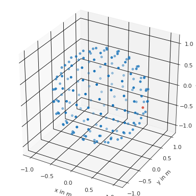
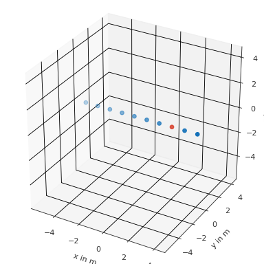
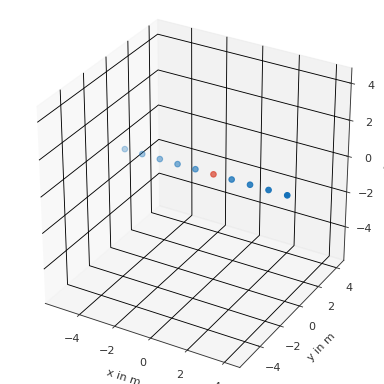
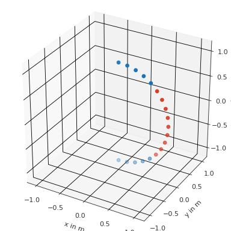
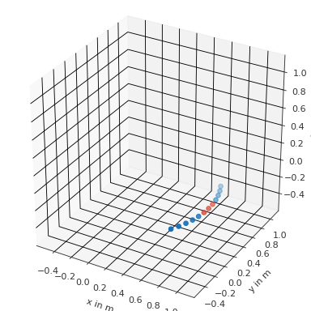
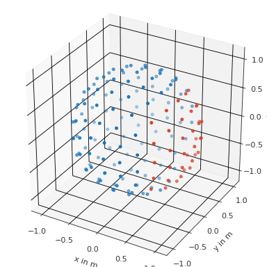
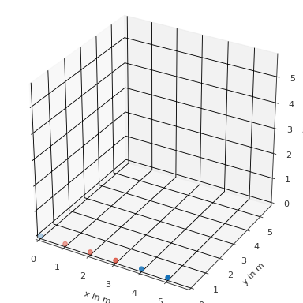

spharpy.SamplingSphere#
The SamplingSphere class inherits from the pyfar.classes.coordinates
class, which supports various coordinate systems and the conversion between
them.
SamplingSphere is designed to represent a set of
points on a sphere.
Therefore, all points must have the same radius within an absolute tolerance,
defined by radius_tolerance. If the
weights are not None, their sum must
equal the integral over the unit sphere, which is \(4\pi\).
It also adds two additional properties:
n_max: the maximum spherical harmonic order of the sampling grid.quadrature: a flag that indicates if the points belong to a quadrature, which requires that theweightssum to \(4 \pi\) and the inner product of the Spherical Harmonics matrix \(\mathrm{Y}\) yields the identity matrix \(\mathrm{Y}^\mathrm{T} \text{diag}\{w\}\mathrm{Y}=\mathrm{I}\) with the weights vector \(w\).
Note that the spharpy.samplings module provides a set of
predefined spherical sampling grids, which can be used to create a
spharpy.SamplingSphere object.
- class spharpy.SamplingSphere(x=None, y=None, z=None, n_max=None, weights: array = None, quadrature: bool = False, comment: str = '', radius_tolerance=1e-06)[source]#
Class for samplings on a sphere
Attributes:
Counter clock-wise angle in the x-y plane of the right handed Cartesian coordinate system in radians.
Return channel dimension.
Angle in the x-z plane of the right handed Cartesian coordinate system in radians.
Get comment.
Return channel shape.
Return channel size.
Cylindrical coordinates.
Angle in the x-z plane of the right handed Cartesian coordinate system in radians.
Angle in the y-z plane of the right handed Cartesian coordinate system in radians.
Counter clock-wise angle in the x-y plane of the right handed Cartesian coordinate system in radians.
Get the maximum spherical harmonic order.
Angle in the x-z plane of the right handed Cartesian coordinate system in radians.
Get or set the quadrature flag.
Distance to the origin of the right handed Cartesian coordinate system in meters (\(0\) < radius < \(\infty\)).
Get or set the radius tolerance in meter.
Radial distance to the the z-axis of the right handed Cartesian coordinate system (\(0\) < rho < \(\infty\)).
This function will be deprecated in pyfar 0.8.0 in favor of
spharpy.samplings.SamplingSphere.Spherical coordinates according to the top pole colatitude coordinate system.
Spherical coordinates according to the top pole elevation coordinate system.
Spherical coordinates according to the frontal pole coordinate system.
Spherical coordinates according to the side pole coordinate system.
Angle in the x-z plane of the right handed Cartesian coordinate system in radians.
The area/quadrature weights of the sampling.
X coordinate of a right handed Cartesian coordinate system in meters (\(-\infty\) < x < \(\infty\)).
Y coordinate of a right handed Cartesian coordinate system in meters (\(-\infty\) < y < \(\infty\)).
Z coordinate of a right handed Cartesian coordinate system in meters (\(-\infty\) < z < \(\infty\)).
Methods:
copy()Return a deep copy of the Coordinates object.
find_nearest(find[, k, distance_measure, ...])Find the k nearest coordinates points.
find_nearest_cart(points_1, points_2, ...[, ...])This function will be deprecated in pyfar 0.8.0 in favor of the
find_withinmethod.find_nearest_k(points_1, points_2, points_3)This function will be deprecated in pyfar 0.8.0 in favor of the
find_nearestmethod.find_nearest_sph(points_1, points_2, ...[, ...])This function will be deprecated in pyfar 0.8.0 in favor of the
find_withinmethod.find_slice(coordinate, unit, value[, tol, ...])This function will be deprecated in pyfar 0.8.0.
find_within(find[, distance, ...])Find coordinates within a certain distance to the query points.
from_cartesian(x, y, z[, n_max, weights, ...])Create a Coordinates class object from a set of points on a sphere.
from_cylindrical(azimuth, z, rho[, n_max, ...])Create a Coordinates class object from a set of points on a sphere.
from_spherical_colatitude(azimuth, ...[, ...])Create a Coordinates class object from a set of points on a sphere.
from_spherical_elevation(azimuth, elevation, ...)Create a Coordinates class object from a set of points on a sphere.
from_spherical_front(frontal, upper, radius)Create a Coordinates class object from a set of points on a sphere.
from_spherical_side(lateral, polar, radius)Create a Coordinates class object from a set of points on a sphere.
get_cart([convention, unit, convert])This function will be deprecated in pyfar 0.8.0 in favor of
cartesianGet coordinate points in cartesian coordinate systems.get_cyl([convention, unit, convert])This function will be deprecated in pyfar 0.8.0 in favor of the cylindrical property.
get_sph([convention, unit, convert])This function will be deprecated in pyfar 0.8.0 in favor of the spherical_... properties.
rotate(rotation[, value, degrees, inverse])Rotate points stored in the object around the origin of coordinates.
set_cart(x, y, z[, convention, unit])This function will be deprecated in pyfar 0.8.0 in favor of
cartesian,x,yorz.set_cyl(azimuth, z, radius_z[, convention, unit])This function will be deprecated in pyfar 0.8.0 in favor of the
cylindricalproperty.set_sph(angles_1, angles_2, radius[, ...])This function will be deprecated in pyfar 0.8.0 in favor of the
spherical_*properties.show([mask])Show a scatter plot of the coordinate points.
systems([show, brief])This function will be deprecated in pyfar 0.8.0, check the documentation instead.
- property azimuth#
Counter clock-wise angle in the x-y plane of the right handed Cartesian coordinate system in radians. \(0\) radians are defined in positive x-direction, \(\pi/2\) radians in positive y-direction and so on (\(-\infty\) < azimuth < \(\infty\), \(2\pi\)-cyclic).
- property cartesian#
Returns
x,y,z. Right handed cartesian coordinate system. See see Coordinate Systems and Coordinates for more information.
- property cdim#
Return channel dimension.
The channel dimension gives the number of dimensions of the coordinate points excluding the last dimension.
- property colatitude#
Angle in the x-z plane of the right handed Cartesian coordinate system in radians. \(0\) radians colatitude are defined in positive z-direction, \(\pi/2\) radians in positive x-direction, and \(\pi\) in negative z-direction (\(0\leq\) colatitude \(\leq\pi\)). The colatitude is a variation of the elevation angle.
- property comment#
Get comment.
- copy()#
Return a deep copy of the Coordinates object.
- property cshape#
Return channel shape.
The channel shape gives the shape of the coordinate points excluding the last dimension, which is always 3.
- property csize#
Return channel size.
The channel size gives the number of points stored in the coordinates object.
- property cylindrical#
Cylindrical coordinates. Returns
azimuth,z,rho. See see Coordinate Systems and Coordinates for more information.
- property elevation#
Angle in the x-z plane of the right handed Cartesian coordinate system in radians. \(0\) radians elevation are defined in positive x-direction, \(\pi/2\) radians in positive z-direction, and \(-\pi/2\) in negative z-direction (\(-\pi/2\leq\) elevation \(\leq\pi/2\)). The elevation is a variation of the colatitude.
- find_nearest(find, k=1, distance_measure='euclidean', radius_tol=None)#
Find the k nearest coordinates points.
- Parameters:
find (pf.Coordinates) – Coordinates to which the nearest neighbors are searched.
k (int, optional) – Number of points to return. k must be > 0. The default is
1.distance_measure (string, optional) –
'euclidean'distance is determined by the euclidean distance. This is default.
'spherical_radians'distance is determined by the great-circle distance expressed in radians.
'spherical_meter'distance is determined by the great-circle distance expressed in meters.
radius_tol (float, None) – For all spherical distance measures, the coordinates must be on a sphere, so the radius must be constant. This parameter defines the maximum allowed difference within the radii. Note that increasing the tolerance decreases the accuracy of the search. The default
Noneuses a tolerance of two times the decimal resolution, which is determined from the data type of the coordinate points usingnumpy.finfo.
- Returns:
index (tuple of arrays) – Indices of the neighbors. Arrays of shape
(k, find.cshape)if k>1 else(find.cshape, ).distance (numpy array of floats) – Distance between the points, after the given
distance_measure. It’s of shape (k, find.cshape).
Notes
This is a wrapper for
scipy.spatial.cKDTree.Examples
Find frontal point from a spherical coordinate system
>>> import pyfar as pf >>> coords = pf.samplings.sph_lebedev(sh_order=10) >>> to_find = pf.Coordinates(1, 0, 0) >>> index, distance = coords.find_nearest(to_find) >>> coords.show(index) >>> distance 0.0
(
Source code,png,hires.png,pdf)
Find multidimensional points in multidimensional coordinates with k=1
>>> import pyfar as pf >>> import numpy as np >>> coords = pf.Coordinates(np.arange(9).reshape((3, 3)), 0, 1) >>> to_find = pf.Coordinates( >>> np.array([[0, 1], [2, 3]]), 0, 1) >>> i, d = coords.find_nearest(to_find) >>> coords[i] == find True >>> i (array([[0, 0], [0, 1]], dtype=int64), array([[0, 1], [2, 0]], dtype=int64)) >>> d array([[0., 0.], [0., 0.]])
Find multidimensional points in multidimensional coordinates with k=3
>>> import pyfar as pf >>> import numpy as np >>> coords = pf.Coordinates(np.arange(9).reshape((3, 3)), 0, 1) >>> find = pf.Coordinates( >>> np.array([[0, 1], [2, 3]]), 0, 1) >>> i, d = coords.find_nearest(find, 3) >>> # the k-th dimension is at the end >>> i[0].shape (3, 2, 2) >>> # now just access the k=0 dimension >>> coords[i][0].cartesian array([[[0., 0., 1.], [1., 0., 1.]], [[2., 0., 1.], [3., 0., 1.]]])
- find_nearest_cart(points_1, points_2, points_3, distance, domain='cart', convention='right', unit='met', show=False, atol=1e-15)#
This function will be deprecated in pyfar 0.8.0 in favor of the
find_withinmethod. Find coordinates within a certain distance in meters to query points.- Parameters:
points_i (array like, number) – First, second and third coordinate of the points to which the nearest neighbors are searched.
distance (number) – Euclidean distance in meters in which the nearest points are searched. Must be >= 0.
domain (string, optional) – Domain of the points. The default is
'cart'.convention (string, optional) – Convention of points. The default is
'right'.unit (string, optional) – Unit of the points. The default is
'met'for meters.show (bool, optional) – Show a plot of the coordinate points. The default is
False.atol (float, optional) – A tolerance that is added to distance. The default is`` 1e-15``.
- Returns:
index (numpy array of ints) – The locations of the neighbors in the getter methods (e.g.,
cartesian). Dimension as infind_nearest_k. Missing neighbors are indicated withcsize. Also see Notes below.mask (boolean numpy array) – Mask that contains
Trueat the positions of the selected points andFalseotherwise. Mask is of shapecshape.
Notes
scipy.spatial.cKDTreeis used for the search, which requires an (N, 3) array. The coordinate points in self are thus reshaped to (csize, 3) before they are passed tocKDTree. The index that is returned refers to the reshaped coordinate points. To access the points for example use>>> points_reshaped = self.cartesian.reshape((self.csize, 3)) >>> points_reshaped[index]
Examples
Find frontal points within a distance of 0.5 meters
>>> import pyfar as pf >>> coords = pf.Coordinates(np.arange(-5, 5), 0, 0) >>> result = coords.find_nearest_cart(2, 0, 0, 0.5, show=True)
(
Source code,png,hires.png,pdf)
- find_nearest_k(points_1, points_2, points_3, k=1, domain='cart', convention='right', unit='met', show=False)#
This function will be deprecated in pyfar 0.8.0 in favor of the
find_nearestmethod.Find the k nearest coordinates points.
- Parameters:
points_i (array like, number) – First, second and third coordinate of the points to which the nearest neighbors are searched.
k (int, optional) – Number of points to return. k must be > 0. The default is
1.domain (string, optional) – Domain of the points. The default is
'cart'.convention (string, optional) – Convention of points. The default is
'right'.unit (string, optional) – Unit of the points. The default is
'met'for meters.show (bool, optional) – Show a plot of the coordinate points. The default is
False.
- Returns:
index (numpy array of ints) – The locations of the neighbors in the getter methods (e.g.,
self.cartesian). Dimension according to distance (see below). Missing neighbors are indicated withcsize. Also see Notes below.mask (boolean numpy array) – Mask that contains
Trueat the positions of the selected points andFalseotherwise. Mask is of shapecshape.
Notes
scipy.spatial.cKDTreeis used for the search, which requires an (N, 3) array. The coordinate points in self are thus reshaped to (csize, 3) before they are passed tocKDTree. The index that is returned refers to the reshaped coordinate points. To access the points for example use>>> points_reshaped = self.cartesian.reshape((self.csize, 3)) >>> points_reshaped[index]
Examples
Find the nearest point in a line
>>> import pyfar as pf >>> coords = pf.Coordinates(np.arange(-5, 5), 0, 0) >>> result = coords.find_nearest_k(0, 0, 0, show=True)
(
Source code,png,hires.png,pdf)
- find_nearest_sph(points_1, points_2, points_3, distance, domain='sph', convention='top_colat', unit='rad', show=False, atol=1e-15)#
This function will be deprecated in pyfar 0.8.0 in favor of the
find_withinmethod. Find coordinates within certain angular distance to the query points.- Parameters:
points_i (array like, number) – First, second and third coordinate of the points to which the nearest neighbors are searched.
distance (number) – Great circle distance in degrees in which the nearest points are searched. Must be >= 0 and <= 180.
domain (string, optional) – Domain of the input points. The default is
'sph'.convention (string, optional) – Convention of the input points. The default is
'top_colat'.unit (string, optional) – Unit of the input points. The default is
'rad'.show (bool, optional) – Show a plot of the coordinate points. The default is
False.atol (float, optional) – A tolerance that is added to distance. The default is
1e-15.
- Returns:
index (numpy array of ints) – The locations of the neighbors in the getter methods (e.g.,
cartesian). Dimension as infind_nearest_k. Missing neighbors are indicated withcsize. Also see Notes below.mask (boolean numpy array) – Mask that contains
Trueat the positions of the selected points andFalseotherwise. Mask is of shapecshape.
Notes
scipy.spatial.cKDTreeis used for the search, which requires an (N, 3) array. The coordinate points in self are thus reshaped to (csize, 3) before they are passed tocKDTree. The index that is returned refers to the reshaped coordinate points. To access the points for example usepoints_reshaped = points.cartesian.reshape((points.csize, 3))points_reshaped[index]Examples
Find top points within a distance of 45 degrees
>>> import pyfar as pf >>> import numpy as np >>> coords = pf.Coordinates.from_spherical_elevation( >>> 0, np.arange(-90, 91, 10)*np.pi/180, 1) >>> result = coords.find_nearest_sph(0, np.pi/2, 1, 45, show=True)
(
Source code,png,hires.png,pdf)
- find_slice(coordinate: str, unit: str, value, tol=0, show=False, atol=1e-15)#
This function will be deprecated in pyfar 0.8.0. Use properties and slicing instead, e.g.
coords = coords[coords.azimuth>=np.pi].Find a slice of the coordinates points.
- Parameters:
coordinate (str) – Coordinate for slicing.
unit (str) – Unit in which the value is passed
value (number) – Value of the coordinate around which the points are sliced.
tol (number, optional) – Tolerance for slicing. Points are sliced within the range
[value-tol, value+tol]. The default is0.show (bool, optional) – Show a plot of the coordinate points. The default is
False.atol (number, optional) – A tolerance that is added to tol. The default is
1e-15.
- Returns:
index (tuple of numpy arrays) – The indices of the selected points as a tuple of arrays. The length of the tuple matches
cdim. The length of each array matches the number of selected points.mask (boolean numpy array) – Mask that contains True at the positions of the selected points and False otherwise. Mask is of shape self.cshape.
Notes
value must be inside the range of the coordinate (see
.systems). However, value +/- tol may exceed the range.Examples
Find horizontal slice of spherical coordinate system within a ring of +/- 10 degrees
>>> import pyfar as pf >>> import numpy as np >>> coords = pf.Coordinates.from_spherical_elevation( >>> np.arange(-30, 30, 5)*np.pi/180, 0, 1) >>> result = coords.find_slice('azimuth', 'deg', 0, 5, show=True)
(
Source code,png,hires.png,pdf)
- find_within(find, distance=0.0, distance_measure='euclidean', atol=None, return_sorted=True, radius_tol=None)#
Find coordinates within a certain distance to the query points.
- Parameters:
find (pf.Coordinates) – Coordinates to which the nearest neighbors are searched.
distance (number, optional) – Maximum allowed distance to the given points
find. Distance must be >= 0. For just exact matches use0. The default is0.distance_measure (string, optional) –
'euclidean'distance is determined by the euclidean distance. This is default.
'spherical_radians'distance is determined by the great-circle distance expressed in radians.
'spherical_meter'distance is determined by the great-circle distance expressed in meters.
atol (float, None) – Absolute tolerance for distance. The default
Noneuses a tolerance of two times the decimal resolution, which is determined from the data type of the coordinate points usingnumpy.finfo.return_sorted (bool, optional) – Sorts returned indices if True and does not sort them if False. The default is True.
radius_tol (float, None) – For all spherical distance measures, the coordinates must be on a sphere, so the radius must be constant. This parameter defines the maximum allowed difference within the radii. Note that increasing the tolerance decreases the accuracy of the search, i.e., points that are within the search distance might not be found or points outside the search distance may be returned. The default
Noneuses a tolerance of two times the decimal resolution, which is determined from the data type of the coordinate points usingnumpy.finfo.
- Returns:
index – Indices of the containing coordinates. Arrays of shape (find.cshape).
- Return type:
tuple of array
Notes
This is a wrapper for
scipy.spatial.cKDTree. Compared to previous implementations, it supports self.ndim>1 as well.Examples
Find all point with 1m distance from the frontal point
>>> import pyfar as pf >>> coords = pf.samplings.sph_lebedev(sh_order=10) >>> find = pf.Coordinates(1, 0, 0) >>> index = coords.find_within(find, 1) >>> coords.show(index)
(
Source code,png,hires.png,pdf)
Find all point with 1m distance from two points
>>> import pyfar as pf >>> coords = pf.Coordinates(np.arange(6), 0, 0) >>> find = pf.Coordinates([2, 3], 0, 0) >>> index = coords.find_within(find, 1) >>> coords.show(index[0])
(
Source code,png,hires.png,pdf)
- classmethod from_cartesian(x, y, z, n_max=None, weights: array = None, quadrature: bool = False, comment: str = '', radius_tolerance: float = 1e-06)[source]#
Create a Coordinates class object from a set of points on a sphere.
See
pyfar.classes.coordinatesfor more information.- Parameters:
x (ndarray, number) – X coordinate of a right handed Cartesian coordinate system in meters (-infty < x < infty).
y (ndarray, number) – Y coordinate of a right handed Cartesian coordinate system in meters (-infty < y < infty).
z (ndarray, number) – Z coordinate of a right handed Cartesian coordinate system in meters (-infty < z < infty).
n_max (int, optional) – Maximum spherical harmonic order of the sampling grid. The default is
None.weights (array like, number, optional) – Weighting factors for coordinate points. Their sum must equal to the integral over the unit sphere, which is \(4\pi\). The shape of the array must match the shape of the individual coordinate arrays. The default is
None, which means that no weights are used.quadrature (bool, optional) – Flag that indicates if points belong to a quadrature, which requires that weights is not
None. The default isFalse.comment (str, optional) – Comment about the stored coordinate points. The default is
"", which initializes an empty string.radius_tolerance (float, optional) – All points that are stored in a SamplingSphere must have the same radius and an error is raised if the maximum deviation from the mean radius exceeds this tolerance. The default of
1e-6meter is intended to allow for some numerical inaccuracy.
Examples
Create a SamplingSphere object >>> import pyfar as pf >>> sampling = pf.SamplingSphere.from_cartesian(0, 0, 1) Or the using init >>> import pyfar as pf >>> sampling = pf.SamplingSphere(0, 0, 1)
- classmethod from_cylindrical(azimuth, z, rho, n_max=None, weights: array = None, quadrature: bool = False, comment: str = '', radius_tolerance: float = 1e-06)[source]#
Create a Coordinates class object from a set of points on a sphere.
See
pyfar.classes.coordinatesfor more information.- Parameters:
azimuth (ndarray, double) – Angle in radiant of rotation from the x-y-plane facing towards positive x direction. Used for spherical and cylindrical coordinate systems.
z (ndarray, double) – The z coordinate
rho (ndarray, double) – Distance to origin for each point in the x-y-plane. Used for cylindrical coordinate systems.
n_max (int, optional) – Maximum spherical harmonic order of the sampling grid. The default is
None.weights (array like, number, optional) – Weighting factors for coordinate points. Their sum must equal to the integral over the unit sphere, which is \(4\pi\). The shape of the array must match the shape of the individual coordinate arrays. The default is
None, which means that no weights are used.quadrature (bool, optional) – Flag that indicates if points belong to a quadrature, which requires that weights is not
None. The default isFalse.comment (str, optional) – Comment about the stored coordinate points. The default is
"", which initializes an empty string.radius_tolerance (float, optional) – All points that are stored in a SamplingSphere must have the same radius and an error is raised if the maximum deviation from the mean radius exceeds this tolerance. The default of
1e-6meter is intended to allow for some numerical inaccuracy.
Examples
Create a SamplingSphere object >>> import pyfar as pf >>> sampling = pf.SamplingSphere.from_cylindrical(0, 0, 1, sh_order=1)
- classmethod from_spherical_colatitude(azimuth, colatitude, radius, n_max=None, weights: array = None, quadrature: bool = False, comment: str = '', radius_tolerance: float = 1e-06)[source]#
Create a Coordinates class object from a set of points on a sphere.
See
pyfar.classes.coordinatesfor more information.- Parameters:
azimuth (ndarray, double) – Angle in radiant of rotation from the x-y-plane facing towards positive x direction. Used for spherical and cylindrical coordinate systems.
colatitude (ndarray, double) – Angle in radiant with respect to polar axis (z-axis). Used for spherical coordinate systems.
radius (ndarray, double) – Distance to origin for each point. Used for spherical coordinate systems.
n_max (int, optional) – Maximum spherical harmonic order of the sampling grid. The default is
None.weights (array like, number, optional) – Weighting factors for coordinate points. Their sum must equal to the integral over the unit sphere, which is \(4\pi\). The shape of the array must match the shape of the individual coordinate arrays. The default is
None, which means that no weights are used.quadrature (bool, optional) – Flag that indicates if points belong to a quadrature, which requires that weights is not
None. The default isFalse.comment (str, optional) – Comment about the stored coordinate points. The default is
"", which initializes an empty string.radius_tolerance (float, optional) – All points that are stored in a SamplingSphere must have the same radius and an error is raised if the maximum deviation from the mean radius exceeds this tolerance. The default of
1e-6meter is intended to allow for some numerical inaccuracy.
Examples
Create a SamplingSphere object >>> import pyfar as pf >>> sampling = pf.SamplingSphere.from_spherical_colatitude(0, 0, 1)
- classmethod from_spherical_elevation(azimuth, elevation, radius, n_max=None, weights: array = None, quadrature: bool = False, comment: str = '', radius_tolerance: float = 1e-06)[source]#
Create a Coordinates class object from a set of points on a sphere.
See
pyfar.classes.coordinatesfor more information.- Parameters:
azimuth (ndarray, double) – Angle in radiant of rotation from the x-y-plane facing towards positive x direction. Used for spherical and cylindrical coordinate systems.
elevation (ndarray, double) – Angle in radiant with respect to horizontal plane (x-z-plane). Used for spherical coordinate systems.
radius (ndarray, double) – Distance to origin for each point. Used for spherical coordinate systems.
n_max (int, optional) – Maximum spherical harmonic order of the sampling grid. The default is
None.weights (array like, float, None, optional) – Weighting factors for coordinate points. Their sum must equal to the integral over the unit sphere, which is \(4\pi\). The shape of the array must match the shape of the individual coordinate arrays. The default is
None, which means that no weights are used.quadrature (bool, optional) – Flag that indicates if points belong to a quadrature, which requires that weights is not
None. The default isFalse.comment (str, optional) – Comment about the stored coordinate points. The default is
"", which initializes an empty string.radius_tolerance (float, optional) – All points that are stored in a SamplingSphere must have the same radius and an error is raised if the maximum deviation from the mean radius exceeds this tolerance. The default of
1e-6meter is intended to allow for some numerical inaccuracy.
Examples
Create a SamplingSphere object >>> import pyfar as pf >>> sampling = pf.SamplingSphere.from_spherical_elevation(0, 0, 1)
- classmethod from_spherical_front(frontal, upper, radius, n_max=None, weights: array = None, quadrature: bool = False, comment: str = '', radius_tolerance: float = 1e-06)[source]#
Create a Coordinates class object from a set of points on a sphere.
See
pyfar.classes.coordinatesfor more information.- Parameters:
frontal (ndarray, double) – Angle in radiant of rotation from the y-z-plane facing towards positive y direction. Used for spherical coordinate systems.
upper (ndarray, double) – Angle in radiant with respect to polar axis (x-axis). Used for spherical coordinate systems.
radius (ndarray, double) – Distance to origin for each point. Used for spherical coordinate systems.
n_max (int, optional) – Maximum spherical harmonic order of the sampling grid. The default is
None.weights (array like, number, optional) – Weighting factors for coordinate points. Their sum must equal to the integral over the unit sphere, which is \(4\pi\). The shape of the array must match the shape of the individual coordinate arrays. The default is
None, which means that no weights are used.quadrature (bool, optional) – Flag that indicates if points belong to a quadrature, which requires that weights is not
None. The default isFalse.comment (str, optional) – Comment about the stored coordinate points. The default is
"", which initializes an empty string.radius_tolerance (float, optional) – All points that are stored in a SamplingSphere must have the same radius and an error is raised if the maximum deviation from the mean radius exceeds this tolerance. The default of
1e-6meter is intended to allow for some numerical inaccuracy.
Examples
Create a SamplingSphere object >>> import pyfar as pf >>> sampling = pf.SamplingSphere.from_spherical_front(0, 0, 1)
- classmethod from_spherical_side(lateral, polar, radius, n_max=None, weights: array = None, quadrature: bool = False, comment: str = '', radius_tolerance: float = 1e-06)[source]#
Create a Coordinates class object from a set of points on a sphere.
See
pyfar.classes.coordinatesfor more information.- Parameters:
lateral (ndarray, double) – Angle in radiant with respect to horizontal plane (x-y-plane). Used for spherical coordinate systems.
polar (ndarray, double) – Angle in radiant of rotation from the x-z-plane facing towards positive x direction. Used for spherical coordinate systems.
radius (ndarray, double) – Distance to origin for each point. Used for spherical coordinate systems.
n_max (int, optional) – Maximum spherical harmonic order of the sampling grid. The default is
None.weights (array like, number, optional) – Weighting factors for coordinate points. Their sum must equal to the integral over the unit sphere, which is \(4\pi\). The shape of the array must match the shape of the individual coordinate arrays. The default is
None, which means that no weights are used.quadrature (bool, optional) – Flag that indicates if points belong to a quadrature, which requires that weights is not
None. The default isFalse.comment (str, optional) – Comment about the stored coordinate points. The default is
"", which initializes an empty string.radius_tolerance (float, optional) – All points that are stored in a SamplingSphere must have the same radius and an error is raised if the maximum deviation from the mean radius exceeds this tolerance. The default of
1e-6meter is intended to allow for some numerical inaccuracy.
Examples
Create a SamplingSphere object >>> import pyfar as pf >>> sampling = pf.SamplingSphere.from_spherical_side(0, 0, 1)
- property frontal#
Angle in the y-z plane of the right handed Cartesian coordinate system in radians. \(0\) radians frontal angle are defined in positive y-direction, \(\pi/2\) radians in positive z-direction, \(\pi\) in negative y-direction and so on (\(-\infty\) < frontal < \(\infty\), \(2\pi\)-cyclic).
- get_cart(convention='right', unit='met', convert=False)#
This function will be deprecated in pyfar 0.8.0 in favor of
cartesianGet coordinate points in cartesian coordinate systems.The points that are returned are defined by the domain, convention, and unit:
domain, convention
p[…,1]
p[…,1]
p[…,1]
units
cart, right
x
y
z
met
For more information run
>>> coords = Coordinates() >>> coords.systems()
- Parameters:
convention (string, optional) – Convention in which the coordinate points are stored. The default is
'right'.unit (string, optional) – Unit in which the coordinate points are stored. The default is
'met'.convert (boolean, optional) – If True, the internal representation of the samplings points will be converted to the queried coordinate system. The default is
False, i.e., the internal presentation remains as it is.
- Returns:
points – Coordinate points.
points[...,0]holds the points for the first coordinate,points[...,1]the points for the second, andpoints[...,2]the points for the third coordinate.- Return type:
numpy array
- get_cyl(convention='top', unit='rad', convert=False)#
This function will be deprecated in pyfar 0.8.0 in favor of the cylindrical property. For conversions from or into degree use
deg2radandrad2deg. Get coordinate points in cylindrical coordinate system.The points that are returned are defined by the domain, convention, and unit:
domain, convention
p[…,1]
p[…,1]
p[…,1]
units
cyl, top
azimuth
z
radius_z
rad, deg
For more information run
>>> coords = Coordinates() >>> coords.systems()
- Parameters:
convention (string, optional) – Convention in which the coordinate points are stored. The default is
'right'.unit (string, optional) – Unit in which the coordinate points are stored. The default is
'rad'. The'deg'parameter will be deprecated in pyfar 0.8.0 in favor of thedeg2radandrad2deg.convert (boolean, optional) – If True, the internal representation of the samplings points will be converted to the queried coordinate system. The default is False, i.e., the internal presentation remains as it is.
- Returns:
points – Coordinate points.
points[...,0]holds the points for the first coordinate,points[...,1]the points for the second, andpoints[...,2]the points for the third coordinate.- Return type:
numpy array
- get_sph(convention='top_colat', unit='rad', convert=False)#
This function will be deprecated in pyfar 0.8.0 in favor of the spherical_… properties. For conversions from or into degree use
deg2radandrad2deg. Get coordinate points in spherical coordinate systems.The points that are returned are defined by the domain, convention, and unit:
domain, convention
p[…,1]
p[…,1]
p[…,1]
units
sph, top_colat
azimuth
colatitude
radius
rad, deg
sph, top_elev
azimuth
elevation
radius
rad, deg
sph, side
lateral
polar
radius
rad, deg
sph, front
phi
theta
radius
rad, deg
For more information run
>>> coords = Coordinates() >>> coords.systems()
- Parameters:
convention (string, optional) – Convention in which the coordinate points are stored. The default is
'top_colat'.unit (string, optional) – Unit in which the coordinate points are stored. The default is
'rad'. The'deg'parameter will be deprecated in pyfar 0.8.0 in favor of thedeg2radandrad2deg.convert (boolean, optional) – If True, the internal representation of the samplings points will be converted to the queried coordinate system. The default is
False, i.e., the internal presentation remains as it is.
- Returns:
points – Coordinate points.
points[...,0]holds the points for the first coordinate,points[...,1]the points for the second, andpoints[...,2]the points for the third coordinate.- Return type:
numpy array
- property lateral#
Counter clock-wise angle in the x-y plane of the right handed Cartesian coordinate system in radians. \(0\) radians are defined in positive x-direction, \(\pi/2\) radians in positive y-direction and \(-\pi/2\) in negative y-direction (\(-\pi/2\leq\) lateral \(\leq\pi/2\)).
- property n_max#
Get the maximum spherical harmonic order.
- property polar#
Angle in the x-z plane of the right handed Cartesian coordinate system in radians. \(0\) radians polar angle are defined in positive x-direction, \(\pi/2\) radians in positive z-direction, \(\pi\) in negative x-direction and so on (\(-\infty\) < polar < \(\infty\), \(2\pi\)-cyclic).
- property quadrature#
Get or set the quadrature flag.
- property radius#
Distance to the origin of the right handed Cartesian coordinate system in meters (\(0\) < radius < \(\infty\)).
- property radius_tolerance#
Get or set the radius tolerance in meter.
- property rho#
Radial distance to the the z-axis of the right handed Cartesian coordinate system (\(0\) < rho < \(\infty\)).
- rotate(rotation: str, value=None, degrees=True, inverse=False)#
Rotate points stored in the object around the origin of coordinates.
This is a wrapper for
scipy.spatial.transform.Rotation(see this class for more detailed information).- Parameters:
rotation (str) –
'quat'Rotation given by quaternions.
'matrix'Rotation given by matrixes.
'rotvec'Rotation using rotation vectors.
'xyz'Rotation using euler angles. Up to three letters. E.g.,
'x'will rotate about the x-axis only, while'xz'will rotate about the x-axis and then about the z-axis. Use lower letters for extrinsic rotations (rotations about the axes of the original coordinate system xyz, which remains motionless) and upper letters for intrinsic rotations (rotations about the axes of the rotating coordinate system XYZ, solidary with the moving body, which changes its orientation after each elemental rotation).
value (number, array like) – Amount of rotation in the format specified by rotation (see above).
degrees (bool, optional) – Pass angles in degrees if using
'rotvec'or euler angles ('xyz'). The default isTrue. Use False to pass angles in radians.inverse (bool, optional) – Apply inverse rotation. The default is
False.
Notes
Points are converted to the cartesian right handed coordinate system for the rotation.
Examples
Get a coordinates object
>>> import pyfar as pf >>> coords = pf.Coordinates(np.arange(-5, 5), 0, 0)
Rotate 45 degrees about the y-axis using
quaternions
>>> coordinates.rotate('quat', [0 , 0.38268343, 0 , 0.92387953])
a rotation matrix
>>> coordinates.rotate('matrix', ... [[ 0.70710678, 0 , 0.70710678], ... [ 0 , 1 , 0. ], ... [-0.70710678, 0 , 0.70710678]])
a rotation vector
>>> coordinates.rotate('rotvec', [0, 45, 0])
euler angles
>>> coordinates.rotate('XYZ', [0, 45, 0])
To see the result of the rotation use
>>> coordinates.show()
- set_cart(x, y, z, convention='right', unit='met')#
This function will be deprecated in pyfar 0.8.0 in favor of
cartesian,x,yorz. Enter coordinate points in cartesian coordinate systems.The points that enter the Coordinates object are defined by the domain, convention, and unit
domain, convention
points_1
points_2
points_3
unit
cart, right
x
y
z
met
For more information run
>>> coords = Coordinates() >>> coords.systems()
- Parameters:
x (array like, float) – Points for the first, second, and third coordinate
y (array like, float) – Points for the first, second, and third coordinate
z (array like, float) – Points for the first, second, and third coordinate
convention (string, optional) – Convention in which the coordinate points are stored. The default is
'right'.unit (string, optional) – Unit in which the coordinate points are stored. The default is
'met'for meters.
- set_cyl(azimuth, z, radius_z, convention='top', unit='rad')#
This function will be deprecated in pyfar 0.8.0 in favor of the
cylindricalproperty. For conversions from or into degree usedeg2radandrad2deg. Enter coordinate points in cylindrical coordinate systems.The points that enter the Coordinates object are defined by the domain, convention, and unit
domain, convention
points_1
points_2
points_3
unit
cyl, top
azimuth
z
radius_z
rad, deg
For more information run
>>> coords = Coordinates() >>> coords.systems()
- Parameters:
points_i (array like, number) – Points for the first, second, and third coordinate
convention (string, optional) – Convention in which the coordinate points are stored. The default is
'top'.unit (string, optional) – Unit in which the coordinate points are stored. The default is
'rad'.
- set_sph(angles_1, angles_2, radius, convention='top_colat', unit='rad')#
This function will be deprecated in pyfar 0.8.0 in favor of the
spherical_*properties. For conversions from or into degree usedeg2radandrad2deg. Enter coordinate points in spherical coordinate systems.The points that enter the Coordinates object are defined by the domain, convention, and unit
domain, convention
points_1
points_2
points_3
unit
sph, top_colat
azimuth
colatitude
radius
rad, deg
sph, top_elev
azimuth
elevation
radius
rad, deg
sph, side
lateral
polar
radius
rad, deg
sph, front
phi
theta
radius
rad, deg
For more information run
>>> coords = Coordinates() >>> coords.systems()
- Parameters:
points_i (array like, number) – Points for the first, second, and third coordinate
convention (string, optional) – Convention in which the coordinate points are stored. The default is
'top_colat'.unit (string, optional) – Unit in which the coordinate points are stored. The default is
'rad'. The'deg'parameter will be deprecated in pyfar 0.8.0 in favor of thedeg2radandrad2deg.
- property sh_order#
This function will be deprecated in pyfar 0.8.0 in favor of
spharpy.samplings.SamplingSphere. Get the maximum spherical harmonic order.
- show(mask=None, **kwargs)#
Show a scatter plot of the coordinate points.
- Parameters:
mask (boolean numpy array, None, optional) – Mask or indexes to highlight. Highlight points in red if
mask==True. The default isNone, which plots all points in the same color.kwargs (optional) – Keyword arguments are passed to
matplotlib.pyplot.scatter. If a mask is provided and the key c is contained in kwargs, it will be overwritten.
- Returns:
ax – The axis used for the plot.
- Return type:
- property spherical_colatitude#
Spherical coordinates according to the top pole colatitude coordinate system. Returns
azimuth,colatitude,radius. See see Coordinate Systems and Coordinates for more information.
- property spherical_elevation#
Spherical coordinates according to the top pole elevation coordinate system.
azimuth,elevation,radius. See see Coordinate Systems and Coordinates for more information.
- property spherical_front#
Spherical coordinates according to the frontal pole coordinate system. Returns
frontal,upper,radius. See see Coordinate Systems and Coordinates for more information.
- property spherical_side#
Spherical coordinates according to the side pole coordinate system. Returns
lateral,polar,radius. See see Coordinate Systems and Coordinates for more information.
- systems(show='all', brief=False)#
This function will be deprecated in pyfar 0.8.0, check the documentation instead. Print coordinate systems and their description on the console.
Note
All coordinate systems are described with respect to the right handed cartesian system (
domain='cart',convention='right'). Distances are always specified in meters, while angles can be radians or degrees (unit='rad'orunit='deg').- Parameters:
show (string, optional) –
'current'to list the current coordinate system or'all'to list all coordinate systems. The default is'all'.brief (boolean, optional) – Will only list the domains, conventions and units if True. The default is
False.
- Return type:
Prints to console.
- property upper#
Angle in the x-z plane of the right handed Cartesian coordinate system in radians. \(0\) radians upper angle are defined in positive x-direction, \(\pi/2\) radians in positive z-direction, and \(\pi\) in negative x-direction (\(0\leq\) upper \(\leq\pi\)).
- property weights#
The area/quadrature weights of the sampling. Their sum must equal to \(4\pi\).
- property x#
X coordinate of a right handed Cartesian coordinate system in meters (\(-\infty\) < x < \(\infty\)).
- property y#
Y coordinate of a right handed Cartesian coordinate system in meters (\(-\infty\) < y < \(\infty\)).
- property z#
Z coordinate of a right handed Cartesian coordinate system in meters (\(-\infty\) < z < \(\infty\)).
{kind=link}
{kind=link}
{kind=link}
{kind=link}
{kind=link}
{kind=link}
{kind=link}
{kind=link}
{kind=link}
{kind=link}
{kind=link}
{kind=link}
{kind=link}
{kind=link}